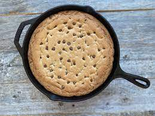

Protein Cookie

Description
This recipe is a hit in my household. With my wife and I living very active lifestyles, we find it hard to meet our protein needs for the day frequently.
If you are an active person who does not have the time to make extravagant desserts, and have trouble meeting your protein goals, then this recipe is for you!
Ingredients
- Sugar-Free Syrup (30 g)
- Old-Fashioned Oats (40 g)
- Protein Powder (60 g)
- Stevia or Splenda (60 g)
- Almond Milk (120 g)
Steps
- Incorporate all ingredients in a bowl and stir vigorously until combined.
- Preheat oven to 350 degrees Fahrenheit.
- Lightly spray a cast-iron pan or small, circular baking pan with non-stick spray and pour mixture.
- Bake at 350 degrees Fahrenheit for 12 minutes.
- After 12 minutes, pull cookie out and let rest for at least 2 minutes.
- Throw on your favorite toppings and enjoy this macro-friendly sweet!